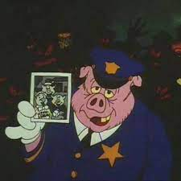

MUSICA MAIS ESCUTADA
terra de ninguem

Tem um menor que 'tá disposto
Doze raja no cantinho
Agacha atrás do poste, passa a visão no radinho
Enquanto o homem de lata faz extermínio no Rio
Sem processo seletivo, é tipo cachorra no cio
E ele vem, sem olhar a quem
Porque 'tá numa área onde todo mundo é ninguém
E eu também sou ninguém, (não) não me entenda mal
Mas neguei minhas raizes só pra poder viver bem
Vou me jogar no oceano, viver de maconha
Ser o único garoto que tentou furar a bolha
Vou adaptar as minhas escolhas, formar uns aliados
E tentar entender que nem todo ciclo é fechado